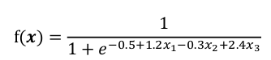

final review
함수에 의한 지식 표현
기호 기반의 지식 표현
기호를 사용하여 대상 표현
대상 간의 관계 표현
규칙, 프레임, 의미망, 논리 등
함수 기반의 지식 표현

비기호적 지식표현
- 기호 대신 수치값과 수치값을 계산하는 함수를 사용하여 지식을 표현
신경망과 딥러닝
- 퍼셉트론 - 함수식 계산 출력 생성
- 다층 퍼셉트론
서포트 벡터 머신
회귀 모델 등

불확실한 지식표현
지식이 불확실하게 획득될 수밖에 없는 이유
- 지식이 약한 인과관계를 나타내거나 애매한 연관관계를 나타내는 경우
- 확신도 사용 표현, 베이즈 정리 사용 표현
- 사람으로부터 획득되는 지식은 자연어를 사용하기 때문에 본질적으로 모호하고 부정확
- 퍼지이론 사용 표현
- 지식 표현의 대상 자체가 무작위적인 특징을 보이기 때문에 지식이 불확실 할 수 밖에 없는 샇왕이 있음
- 알려지지 않은 것으로 간주하고 근사적인 추론 진행
- 불완전하거나 결손된 데이터에 기반한 지식인 경우
- 지식 소스 별로 가중치 부여
확신도를 이용한 규칙의 불확실성 표현
확신도 - 규칙과 사실에 의한 지식 표현에서 이들의 신뢰정도를 구간 [-1, 1] 상의 값으로 표현하는 것


확률을 이용한 규칙의 불확실성 표현
확률
- 어떤 사건이 일어날 가능성을 값으로 나타낸 것
- 반복된 실험에서 관심대상 사건의 상대적인 빈도 - 빈도주의적 확률
- 주관적인 확신이나 믿음의 정도 - 주관적 확률
- 사건이 일어날 가능성을 구간 [0, 1] 사이의 값으로 나타냄
결합 확률
- 두 개 이상의 사건에 대한 확률
조건부 확률
- 어떤 사건 A가 일어날 때 다른 사건 B도 일어날 확률 P(B|A)
\[ P(B|A) = \frac{P(A, B)}{P(A)} \]
베이즈 정리
\[ P(A|B) = \frac{P(B|A)P(A)}{P(b)} \]
P(A)
- 사전 확률
- 사건 A에 대한 무조건적인 믿음의 정도
P(B|A)
- 가능도
- A가 일어나는 조건에서 사건 B가 일어날 조건부 확률
P(A|B)
- 사후 확률
충분가능도 (LS)
\[ LS = \frac{P(A|B)}{P(A|\neg{B})} \]
필요가능도 (LN)
\[ LN = \frac{P(\neg{A}|B)}{P(\neg{A}|\neg{B})} \]
사전 승률
\[ O(B) = \frac{P(B)}{1 - P(B)} \]
사후 승률
\[ O(B|A) = LS · O(B) \]
\[ O(B|\neg{A}) = LN · O(B) \]
\[ P(B|A) = \frac{O(B|A)}{1 + O(B|A)} \]
\[ P(B|\neg{A}) = \frac{O(B|\neg{A})}{1 + O(B|\neg{A})} \]
퍼지 이론
정성적인 대상을 표현하기 위해 소속함수를 사용

퍼지 규칙
소속함수로 표현된 언어적인 항을 포함하는 규칙
퍼지 추론
정량적인 추론을 하여 수치값 결과를 얻어내는 과정


비퍼지화
퍼지 추론의 결과를 실수 값으로 변환하는 것


확률 그래프 모델

그래프 이론과 확률 모델을 결합하여 확률분포를 표현하고 확률변수들에 대한 확률을 계산하는 방법들
서로 독립
\[ P(A, B) = P(A)P(B) \]
조건부 독립
\[ P(A, B|C) = P(A|C)P(B|C) \]
베이지안 망
조건부 확률분포를 사용하여 결합 확률분포를 표현하는 확률 그래프 모델


마르코프 랜덤 필드

규칙 기반 시스템
지식을 규칙의 형태로 표현하고, 주어진 문제 상황에 적용될 수 있는 규칙들을 사용하여 문제에 대한 해를 찾는 지식 기반 시스템
전문가 시스템, 생성 시스템, 프로덕션 시스템
추론
구축된 지식과 주어진 데이터나 정보를 이용하여 가설을 검증하거나, 새로운 사실을 유도해 내거나, 또는 관련된 정보를 유추하는 것
전향 추론
규칙의 조건부와 만족하는 사실이 있을 때 규칙의 결론부를 실행하거나 처리하도록 하는 것
후향 추론
어떤 사실을 검증하거나 확인하고 싶은 경우에 관심 대상 사실을 결론부에 가지고 있는 규칙을 찾아서 조건부의 조건들이 모두 만족하는지 확인하는 추론
규칙 기반 시스템 구조
사실 - 문제 영역에 대해 알려진 데이터나 정보
규칙베이스
- 전체 규칙의 집합을 관리하는 부분
- 생성 메모리
생성규칙 - IF-THEN 규칙
작업 메모리 - 사용자로부터 받은 문제에 대한 정보를 관리하고 추론과정의 중간결과를 저장하며, 유도된 최종해를 저장한다. 작업메모리에 저장되는 모든 것을 사실이라고 한다.
추론엔진
실행할 수 있는 규칙들을 찾은 다음, 우선적으로 처리할 규칙을 선택하여, 해당 규칙의 결론부를 실행하는 역할을 한다.
패턴 매칭 → 경합 해소 → 규칙 실행의 과정을 반복하여 추론
패턴매칭
- 작업메모리의 사실과 규칙베이스에 있는 규칙의 조건부를 대조하여 일치하는 규칙을 찾는 과정
경합 집합
- 실행 가능한 규칙들의 집합
- 사실과 규칙의 조건부가 일치하는 규칙들의 집합
여러 규칙을 동시에 실행할 경우 모순이 발생할 수 있기 때문에 추론 엔진은 한 번에 하나의 규칙만 실행
경합해소
- 경합 집합에서 실행할 규칙을 하나 선택하는 과정
규칙 격발
- 규칙의 결론부분을 실행하는 것

규칙의 결론부에는 새로운 사실을 작업메모리에 추가하거나, 사실을 삭제 또는 수정하거나, 사용자 인터페이스에 정보를 제공하거나, 시스템 외부의 기능을 호출하는 작업을 포함할 수 있다.
사용자 인터페이스를 통해 사용자는 규칙베이스 및 작업메모리를 관리하고 추론 엔진을 조작할 수 있다.
외부 인터페이스는 규칙베이스의 내용이 아닌 외부 데이터나 함수의 기능을 사용할 수 있게 해준다.
경합 해소 전략
규칙 우선순위 - 미리 각 규칙에 우선순위를 부여해 두어, 경합 집합에서 우선 순위가 가장 높은 규칙을 선택한다.
최신 우선 - 가장 최근에 입력된 데이터와 매칭된 규칙을 선택한다. 이 전략을 사용하는 경우, 각 데이터에 시간 정보가 부여되어 있어야 한다.
최초 우선 - 경합 집합에서 가장 먼저 매칭된 규칙을 선택한다.
상세 우선 - 가장 상세한 조건부를 갖는 규칙을 선택한다. 즉, 규칙의 조건부가 가장 복잡하게 기술된 것을 선택한다.
규칙 기반 시스템에서 사실은 객체나 프레임처럼 여러 개의 속성을 포함할 수 있다.
규칙 기반 시스템 개발 도구
Jess, CLIPS, EXSYS, JEOPS
심볼 그라운딩 문제와 프레임 문제
기호 표기와 기호 의미는 필연성은 없지만 그것을 이해하는 문화 체계 속에서 필연화된다.

심볼 그라운딩
기호 표기를 실제 세계의 의미와 연결시키는 것
심볼 그라운딩 문제 - 컴퓨터가 기호 표기를 실제 세계의 의미와 직접 연결시킬 수 없다는 것
프레임 문제
사고범위 문제
어떤 작업을 수행할 때 관계있는 지식만 꺼내서 사용한다는 것은 지극히 자연스럽고 당연하지만, 인공지능에서는 이러한 일이 쉽지 않다는 것.
많은 지식을 가지고 있는 로봇(인공지능 시스템)이 주어진 문제에 관계된 지식을 선택하여 추론을 하려고 할 때, 너무 오랜 시간이 걸릴 수 있다는 것
CYC 프로젝트
상식적인 추론을 하는데 방대한 지식을 추출하여 표현하는 프로젝트
기계학습
컴퓨터에 명시적으로 프로그래밍하지 않아도 학습을 통해 어떤 일을 할 수 있도록 하는 기술
기계학습 알고리즘이 문제해결을 위한 핵심 프로그램을 만들어내는 역할을 함
기계학습은 귀납적 학습인 경우가 많다.
귀납적 학습을 할 때는, 가능하면 학습 결과를 간단한 형태로 표현하는 것이 좋다는 오컴의 면도날 원리를 따른다.
학습 데이터
학습을 할 때 사용하는 데이터


학습 데이터가 기계학습 알고리즘이 처리하기에 적합한 형태가 아닌 경우가 많기 때문에, 학습 데이터로부터 적합한 형태의 특징을 추출해서 기계학습 알고리즘에 넣어주어야 하는 과정이 필요하다.

지도 학습
학습데이터에 입력과 출력 정보가 함께 있는 때의 학습 방법.
출력값이 범주 또는 부류를 나타내는 학습 문제를 분류라고 하고, 출력값이 연속인 구간의 숫자값인 학습 문제를 회귀라고 한다.
비지도 학습
출력 정보가 없는 학습 데이터에 대해서 학습을 하는 것으로, 입력 데이터에 내재되어 있는 패턴을 발견하는 일을 말한다. 데이터들의 유사도를 보고 유사한 것들을 집단으로 붂는 군집화, 데이터의 공간상에서 분포를 찾는 밀도 추정, 문서나 이미지 데이터들이 어떤 주제를 다루는지 찾아내는 토픽 모델링 등이 비지도 학습에 해당한다.
반지도 학습
지도 학습과 비지도 학습 중간에 위치한 것으로, 입력과 출력 정보가 함께 있는 학습 데이터와, 입력만 있고 출력 정보는 없는 학습 데이터를 함께 사용하는 학습을 말한다. 입력과 출력 정보가 함게 있는 학습 데이터가 적은 상황에서 분류나 회귀 모델을 개발할 때, 반지도 학습은 출력 저옵가 없는 입력 데이터들의 분포 특성 정보를 이용함으로써 성능을 개선하려는 방법이다.
강화 학습
특정 환경과 행동과 이에 대한 보상의 경험을 통해서 보상이 최대가 되도록 상황별로 취할 행동을 결정하는 방법이다. 강화 학습은 게임, 제어 문제, 금융공학 문제 등에서 행동 전략이나 정책을 결정할 때 사용된다.
분류
데이터들을 정해진 몇 개의 부류로 대응시키는 문제
학습된 함수를 사용하여 데이터를 분류하는 프로그램을 분류기라고 한다.
분류에서 학습은 각 부류를 나누는 결정경계를 찾아내는 일이고, 분류기는 새로운 입력이 주어지면 학습된 결정경계에 따라 해당 위치에 해당하는 부류를 출력하는 일을 한다.

학습 데이터뿐만 아니라 테스트 데이터에 대해서 잘 맞는 성질을 일반화 능력이라고 한다.
과적합 학습의 문제
학습 데이터에 대한 오류를 최소화하기 위해 너무 세밀하게 학습을 시키면, 학습 데이터에 대한 분류기의 분류 성능은 개선되는 반면, 테스트 데이터에 대해서는 오히려 성능이 떨어질 수 있다.

검증 데이터
- 학습 중단 시점을 결정하기 위한 데이터
\[ 정확도 = \frac{\text{맞게 분류한 데이터 개수}}{\text{전체 데이터 개수}} \]
\[ 오류율 = \frac{\text{잘못 분류한 데이터 개수}}{\text{전체 데이터 개수}} = 1 - 정확도 \]

학습 데이터가 적은 경우의 성능평가 - k겹 교차검증

불균형 데이터 문제

- 가중치를 고려하여 정확도를 측정
- 빈도가 많은 부류의 학습 데이터를 그대로 사용하지 않고, 그 중 일부만 무작위로 표본추출해서 사용하는 것
- 빈도가 적은 부류의 학습 데이터를 인공적으로 더 만드는 것
- SMOTE 알고리즘
- k-nearest neighbor

이진 분류기의 성능 평가
두 개의 부류만을 갖는 데이터에 대한 분류기
로지스틱 회귀 모델
ROC 곡선의 AUC 계산

\[ 민감도, 재현율, 진양성율 = \frac{TP}{TP + FN} \]
\[ 특이도, 진음성율 = \frac{TN}{FP + TN} \]
\[ 정밀도, 양성 예측도 = \frac{TP}{TP + FP} \]
\[ 음성 예측도 = \frac{TN}{TN + FN} \]
\[ 위양성율 = \frac{FP}{FP + TN} = 1 - 특이도 \]
\[ 위발견율 = \frac{FP}{TP + FP} = 1 - 정밀도 \]
\[ 정확도 = \frac{TP + TN}{TP + FP + TN + FN} \]
\[ F1 = 2\frac{정밀도 \times 재현율}{ 정밀도 + 재현율} \]

회귀
출력값이 실수인 함수를 찾는 지도 학습 문제


벌점항 - 모델 복잡도 항
로지스틱 회귀
이진분류 문제


교차 엔트로피
로지스틱 모델의 파라미터 \(\theta\)를 찾기 위해 경사 하강법을 사용
군집화
유사성에 따라 데이터를 군집으로 나누는 것
일반 군잡화 - 하나의 데이터가 하나의 군집에만 속하도록
퍼지 군집화 - 데이터가 여럭 군집에 부분적으로 속하도록

밀도 추정
부류별 확률적 특성을 이용하여 분류. 각 부류별로 해당 부류의 데이터를 잘 생성할 수 있는 확률분포를 만든 다음, 각 확률분포에 대한 테스트 데이터의 확률을 계산해서 가장 큰 확률을 주는 확률분포의 부류를 선택. 이를 위해서 부류별로 해당 학습 데이터를 발생시키는 확률분포를 찾는 작업을 밀도 추정이라고 한다.

모수적 밀도추정
추정하고자 하는 분포가 특정 함수로 표현될 수 있다고 가정하고, 학습 데이터를 가장 잘 반영하는 형태가 되도록 함수의 파라미터를 결정한다.
이때 주로 사용하는 함수는 가우시안 함수.
혼합 가우시안 모델
- 확률분포를 여러 개의 가우시안 분포를 사용하여 표현한 것
비모수적 밀도 추정 방법
분포를 나타낼 함수를 가정하지 않고, 주어진 데이터들을 사용하여 분포를 표현.
히스토그램
파젠 윈도우 밀도추정
차원축소
고차원의 데이터를 정보의 손실을 최소화하면서 저차원으로 변환하는 것
차원의 저주
차원이 커질수록 데이터간 거리가 유사해지는 경향
학습에 필요한 데이터가 기하급수적으로 증가한다는 것

학습에 필요한 데이터가 기하급수적으로 증가

주성분 분석
데이터를 정사영 시킬 때 가장 큰 분산을 갖는 축을 반복해서 찾아 소수의 축들을 기준으로 데이터를 표현함으로써, 데이터를 저차원으로 변환하여 표현하는 방법.

이상치 탐지
다른 데이터와 크게 차이가 나서 다른 메커니즘에 의해 생성된 것이 아닌지 의심스러운 데이터
잡음 - 관측을 잘못하거나 시스템에서 발생하는 무작위적 오류 등에 의해 발생하는 것
신규성 감지와 관련된 개념
점 이상치
다른 데이터와 비교하여 큰 차이를 보이는 데이터
상황적 이상치
상황에 따라 정상일 수도 있고 비정상일 수도 있는 데이터에서, 해당 시점의 상황에 맞지 않는 데이터
집단적 이상치
개별 데이터는 정상처럼 보이지만 여러 데이터를 모아서 보면 비정상으로 보이는 데이터 집단

데이터가 정상과 비정상에 대한 라벨을 가지고 있다면, 지도 학습 방법을 사용하여 분류기를 학습한 다음에, 분류기를 데이터의 이상 판정에 사용할 수 있다. 데이터에 정상과 비정상에 대한 라벨이 전혀 없다면, 군집화를 하여 군집에서 멀리 떨어져 있는 것들을 이상치로 판정한다. 일부 데이터에 정상과 비정상 라벨이 있고, 나머지에는 이러한 라벨이 없는 경우라면 반지도 학습 방법을 사용하여 분류기를 학습하고 이상치 판정을 할 수 있다.
부정사용 감지 시스템, 침입탐지 시스템
반지도 학습
입력에 대한 출력값이 있는 학습 데이터와 출력값이 없는 학습 데이터를 함께 사용하는 기계학습 방법

평활성 가정
분류 경게를 정할 때 인접한 데이터들이 동일한 부류에 속하도록 하는 가정
군집 가정
같은 군집에 속하는 것들은 가능하면 동일한 부류에 소속하게 하는 가정
다양체 가정
고차원 데이터인 경우 낮은 차원의 매니폴드 상에 데이터가 분포하도록 하는 가정
결정트리
학습 데이터로부터 규칙 형태의 지식을 추출하는 방법

강화 학습
모르는 환경에서 행동하는 에이전트가 경험을 통해 기대하는 보상이 최대가 되도록 하는 상황별로 취할 행동을 결정하는 것
주어진 환경 속에서 에이전트가 받게 될 전체적인 보상이 최대가 되도록 하는 일련의 행동을 결정하는 문제를 대상으로 함


마르코프 결정과정

에이전트가 현재 상태를 명확히 알 수 있는 경우
부분관측 마르코프 결정과정 - 에이전트가 현재 상태를 명확히 알 수 없는 경우
기대보상
강화 학습은 에이전트가 행동하는 동안 받을 기대보상이 최대가 되는 정책을 찾는 것을 목표로 한다.

단순 누적합을 하면 누적보상이 무한대로 가까이 갈 수 있기 때문에, 일반적으로 할인 누적합을 사용한다.

가치함수
상태 가치함수는 상태에서 정책에 따라 행동할 때 얻게 되는 기대보상값을 반환하는 함수

행동 가치함수는 상태에서 행동을 취한 다음 정책에 따라 행동하게 될때 얻게 되는 기대보상값을 반환하는 함수

강화학습은 에이전트가 행동을 통해 경험하는 것을 바탕으로 학습한다. 각 상태에서 행동 가치함수를 최대로 하는 행동을 선택하면 이것이 최선의 정책이 된다.
벨만 방정식
최적 상태 가치함수
- 가장 큰 보상을 주는 정책을 따를 때의 상태 가치함수
최적 행동 가치함수
- 가장 큰 행동 가치함수 값을 주는 정책을 따르는 경우의 행동 가치함수
동적 계획법 기반 정책 결정
큰 문제를 작은 문제들로 분할하여 작은 문제들을 먼저 해결한 다음, 작은 문제의 해를 더 큰 문제의 해를 찾는데 사용하는 기법에서, 여러번 나타나는 동일한 작은 문제들의 해를 기억해 두고 사용하여 반복적으로 동일한 문제를 다시 풀지 않도록 함으로써 처리 속도를 개선하는 방법
정책반복
임의의 정책에서 시작하여 벨만 기대방정식을 수렴할 때까지 적용하여 정책평가를 한 다음 정책개선을 하는 과정을 정책이 수렴할 때까지 반복하여 정책을 결정


가치반복
임의의 가치함수에서 시작하여 정책은 계산하지 않고 가치함수의 갱신을 수렴할 때까지 반복

계획수립
주어진 계획수립 문제의 임의의 초기 상태에서 목표 상태 중의 하나로 도달할 수 있게 하는 일련의 행동을 생성하는 것


구성요소
초기 상태에 대한 명세
원하는 목표 상태에 대한 명세
가능한 행동들에 대한 명세
에이전트
위임받은 일을 자율적이고 지능적으로 처리하는 개체
소프트웨어 에이전트, 물리적 에이전트
어떻게 일을 할지를 말하지 않고, 목적만을 말하면 알아서 처리할 수 있는 능력이 필요
고전적 계획수립
기본 전제
- 초기 상태는 하나만 주어진다
- 행동들은 지속시간이 없고, 행동의 결과가 결정적이고, 한 번에 하나의 행동만 수행될 수 있다
- 행동을 하는 에이저트는 하나 뿐이다
일련의 행동들을 수행한 이후의 세계의 상태 예측 가능
계획은 일련의 행동들로 정의
- 목표 상태에 도달하기 위해 어떤 행동을 해야 하는지 미리 결정할 수 있음
상태공간 계획수립
전향탐색, 후향탐색
상태공간 상의 초기 상태에서 목표 상태로의 경로탐색
- 노드 - 세계의 상태
- 에지 - 상태 전이를 일으키는 행동
행동이 바로 적용할 수 있는 기본 행동
- 연산자 = 기본 행동

전향 탐색
초기 상태에서 시작
적용 가능한 연산자를 목표 상태에 도달할 때까지 적용
다양한 알고리즘 적용 가능
- BFS, DFS, A* algorithm

후향 탐색
목표 상태에서 시작
해당 상태를 만들어내는 행동 선택을 시작 상태에 도달할 때까지 반복

계획공간 계획수립
탐색 공간이 부분계획들로 구성
- 부분적으로 값이 결정된 행동의 집합
- 제약조건의 집합
- 선행 제약조건
- 바인딩 제약조건
- 인과연결
- 행동 b에서 필요한 선행조건 p를 만족시키기 위해 행동 a 사용

해답 계획이 완성될 때까지 점진적으로 개선
결함 - 부분계획에서 완전하지 못한 부분
- 미해결 목표
- 전제조건을 만족시키는 방법이 아직 결정되지 않은 행동
- 해결방법
- 미해결 목표보다 먼저 실행될 수 있으면서 미해결 목표의 전제조건을 만족시킬 수 있는 행동을 우선 찾음
- 찾아진 행동이 부분계획에 있으면 그것을 선택하고 미해결 목표의 전제 조건을 만족시키도록 변수의 값을 설정하거나 바인딩 제약조건을 추가함

위협
- 삭제 조건 상호작용
- 행동 a가 행동 b의 사전조건 p를 생성하는 인과연결 관계
- 행동 c가 p를 삭제하는 효과 보유
- c가 인과관계를 위협하는 상황

계층적 계획수립
HTN 알고리즘
태스크가 목표로 주어질 때, 이 태스크를 추상적 단계에서 분할하여 점차 구체적인 기본 작업들로 구성하여 계획을 수립하는 방법
계층적 태스크 네트워크 (HTN) 방법
- 대표적인 계층적 계획수립 방법
- 메소드는 태스크를 더 작은 부분 태스크들로 분할하는 방법을 표현함
- 태스크를 분해할 수 있는 방법의 개수만큼의 메소드가 정의됨
- 기본 태스크를 수행할 수 있는 연산자들을 사용하여 목표 태스크를 완수할 수 있는 계획을 찾음
- 부분 태스크 수행에 제약조건 존재 가능
마르코프 결정과정 (MDP)
행동들의 결과는 비결정적이고 에이전트가 행동을 통제할 수 있는 문제
강화학습에 관심을 갖는 문제
이산시간 마르코프 결정과정 문제
행동들은 지속시간이 없다
행동의 결과가 확률에 따라 결정되어 비결정적이다
행동의 결과는 관측 가능하여 확인할 수 있다
보상함수를 최대화하는 것을 목적으로 한다
행동을 하는 에이전트는 하나 뿐이다
부분관측 마르코프 결정과정
행동의 결과가 확률에 따라 결정되는 비결정적인 마르코프 결정과정
행동의 결과는 부분적으로(간접적으로) 관측
- 현재 상태를 정확히 알 수 없고 확률적인 분포로만 추정
현재 상태에 대한 확률적인 분포를 믿음이라고 함
행동을 하면서 이러한 믿음을 계속 갱신
다중 에이전트 계획수립
여러 에이전트가 있는 계획수립 문제
다중 에이전트의 작업에서 필요한 사항
- 하나의 공동 목표를 위한 에이전트들의 계획 수립
- 작업 및 자원에 대한 협상을 통한 계획 개선
- 목표의 달성을 위해 에이전트들의 작업 조정
계획수립기
주어진 문제에 대한 계획을 생성하는 알고리즘 또는 프로그램
특정 영역 계획수립기
해당 영역에 특화된 계획수립 방법
다른 영역에 적용 불가
실제 많은 성공적인 사례
영역 독립 계획수립기
영역에 상관없이 적용할 수 있는 범용 계획수립기
실제 모든 가능한 영역에 적용될 수 있는 계획수립기 개발 곤란
- 적용 영역 제한을 위한 가정
- 고전적 계획수립
계획수립 접근방법
- 상태공간 계획수립
- 계획공간 계획수립
설정 가능 계획수립기
특정 영역 계획수립기에 비하여 영역 독립 계획수립기는 매우 느림
영역 독립 계획수립기를 사용하면서 해당 영역의 문제를 해결하는 방법에 관한 정보를 입력으로 사용
계층적 태스크 네트워크 계획 수립
계획수립 언어
계획수립 문제를 표현하는데 사용하는 언어
고전적 계획수립 문제를 표현하는 언어
- STRIPS, PDDL 등
- 리터럴로 표현되는 상태변수(state variable)가 중심
- 에이전트를 포함한 세계의 상태는 상태변수에 값을 지정하여 표현
- 행동에 대한 표현은 행동전후 상태변수 값의 변화 내용을 기술
- 상태변수들이 상태공간을 결정
- 상태변수들의 개수가 늘어나면 상태공간의 크기는 기하급수적으로 증가
STRIPS (STanford Research Institute Problem Solver)
자동 계획생성기의 이름
계획수립 문제를 표현하는 언어의 이름
상태와 행동을 표현하기 위해 술어논리(first-order predicate logic) 사용
상태
- 변수와 함수를 포함하지 않은 긍정 리터럴들의 논리곱으로 표현

목표
- 리터럴들의 논리곱으로 표현
- 부정 리터럴 및 존재한정사가 붙은 것으로 간주되는 변수 포함 가능

행동
- 이름, 매개변수 목록, 사전조건, 효과로 구성
- 이름
- 어떤 일을 하는 것인지 기술
- 매개변수 목록
- 사저놎건과 효과에 값을 전달하는 변수들
- 사전조건
- 행동을 실행하기 전에 만족돼야 하는 조건 기술
- 함수를 사용하지 않는 리터럴의 논리곱으로 표현
- 효과
- 행동의 실행 후에 생기는 상태변화를 나타내는 것
- 함수를 사용하지 않는 리터럴들의 논리곱으로 표현
- 긍정 리터럴들은 행동 실행으로 새로 생기는 성질 표현 (add-list)
- 부정 리터럴들은 행동 실행으로 더 이상 만족되지 않는 성질 표현 (delete-list)

PDDL
고전적 계획수립 문제의 표현 방법을 표준화하기 위해 개발
국제 계획수립 대회 표준언어로 사용, 계속 진화
문제 영역 세계에 있는 객체, 객체의 성질에 대한 술어, 초기 상태, 목표 상태, 행동을 기술
계획수립 문제를 두 개의 파일에 나누어 저장
- domain 파일 - 술어, 행동에 대한 정보 저장
- problem 파일 - 객체, 초기 상태, 목표 저장